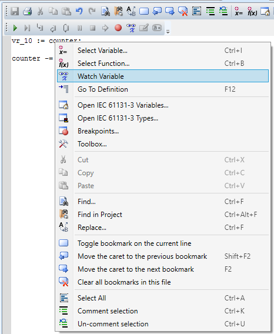
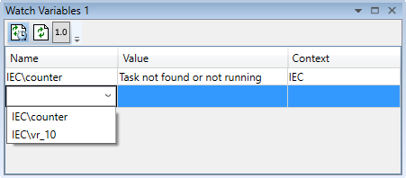
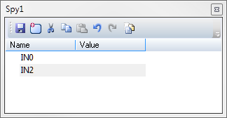
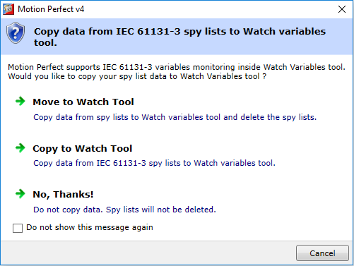
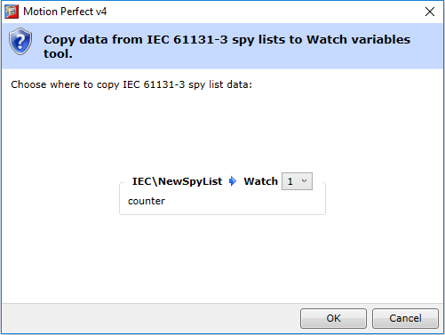

Inside the “IEC 61131-3 Tasks” element in the controller’s project window, there is a list of all the tasks, and each task has an item called “Task variables” that can be opened by double-clicking on it. This window shows all the variables in this task, so it may present too much information and one of the options below may be preferable.
Motion Perfect supports monitoring IEC 61131-3 variables in the standard Watch Variables Tool.
To add a variable from an IEC 61131-3 program, move the caret to the desired variable in an editor, right click and select “Watch Variable” from the context menu. This will automatically open the Watch Variables Tool and add the selected variable to the list.

Open the Watch Variables Tool while an IEC 61131-3 program editor is open. Start typing in the last row of the tool. This will bring a drop-down list where variables matching the typed text are displayed.

Note that when the task is not running, the “Value” column will display “Task not found or not running” message.
An IEC program may have as many spy lists as required, each being added by right-clicking on the program and selecting “Advanced | Add New Spy List…”.

The Spy List is a list of variables and their values:
|
Column |
Description |
|
Name |
The name of the variable to be spied |
|
Value |
The current value of the variable being spied |
To add a new variable directly to the list of variables, drag and drop from an open editor, or the variables editor, or the structures editor. Alternatively press the “Insert” key on the keyboard or click on the Add Variable button in the toolbar, which will pop-up a dialog allowing the user to select the variable from a list.
To remove a variable from the list, select the variable, and press the “Delete” key on the keyboard.
As spy lists are part of the IEC task, when variables are added to, or removed from a spy list, the IEC task has to be recompiled.
When Motion Perfect loads a project with IEC 61131-3 programs and finds a Spy List, it will suggest copying spy list data to Watch Variables Tool.

|
Option |
Description |
|
Move To Watch Tool |
Variables from spy list will be moved to watch tool and spy list will be deleted |
|
Copy To Watch Tool |
Variables from spy list will be moved to watch tool. Spy list will not be deleted. |
|
No, Thanks! |
No data will be copied, spy list will not be deleted |
Since there are now more than one Watch Variables Tools, if one of the first two options is chosen Motion Perfect will prompt to which watch variables tool the data should be copied.
